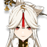
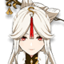

77° directora de la Funeraria El Camino. Pese a su corta edad, ya es la principal encargada de todos los asuntos funerarios de Liyue.
Artefacto/s recomendados


Vida% / Maestria

Bono pyro

Daño / prob critica
Daño/prob critica > Vida% > Maestria
Talentos
Pasivas
Constelacion
Armas Recomendadas


Personajes compatibles


 
